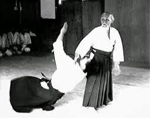

Tsnne Mori (Nune Mori), que posteriormente cambiaría su nombre a Morihei (Paz Abundante), nació el 14 de diciembre de 1883 en la prefectura de Wakayama (actualmente Tanabe) Japón. Hijo de Yoroku Ueshiba y Yuki Itokawa, pertenecientes a antiguas familias samurái.
Maestro de artes marciales japonés. Creador de la disciplina del Aikido, término que puede ser traducido como “arte de la paz”, es considerado uno de los mejores Dai-sensei (Gran maestro) de la historia de las artes marciales.
El interés personal de su padre en que Morihei se iniciara en el entrenamiento de las artes marciales, se originó al haber sido testigo en su infancia de cómo unos maleantes golpearon a su padre hasta su fallecimiento producto de las lesiones; debido a que esté era un activista y líder social. Esto llevó al joven Morihei a una búsqueda personal hacia la perfección en las artes marciales, llegando a conocer y a entrenarse bajo muchos maestros y escuelas clásicos y tradicionales de artes marciales con armas (Escuelas de kenjutsu o de esgrima con sable, estilos: Gotō-ha Yagyu Shingan ryu, Ittô-ryû, y otros; escuelas de manejo de la lanza o sojutsu estilo Hozoin-Ryu, y escuelas del manejo de bastones y varas bojutsu), además de escuelas de artes marciales japonesas sin armas. (Daitō-ryū Aiki-jujutsu), Tenjin Shin'yō-ryū jujutsu y judo). Los registros encontrados hasta el momento, muestran que O-Sensei se entrenó en Tenjin Shin'yō-ryū jujutsu con Tozawa Tokusaburō por un corto período en 1901 en Tokio; en Gotō-ha Yagyū Shingan-ryū kenjutsu con Nakai Masakatsu desde 1903 a 1908 en Sakai, y en judo con Kiyoichi Takagi en 1911 en Tanabe.
En 1925, tuvo Ueshiba la primera de las visiones que habían de transformar su vida. Contaba por entonces cuarenta y dos años, y un día salió al jardín de su dojo en Ayabe, donde fue desafiado por un oficial armado con un sable, al que hizo frente con sus manos desnudas; cada vez que el militar atacaba, Ueshiba se movía ligerísimamente, lo justo para evitar la estocada, hasta que el otro, exhausto, desistió. Inmediatamente después de este suceso se encontró identificado con el sol, la luna y las estrellas y se vio a sí mismo como el universo; había experimentado lo que en japonés se llama el sumi-kiri (la claridad de mente y cuerpo).
En 1935, echando mano de sus ahorros, compró unas tierras en los alrededores de Iwama, al norte de Tokio. Estableció una granja donde instituyó un santuario dedicado a su forma de vida (el aiki) al que se retiró; allí aspiraba a unir los objetivos del aikido -nombre que había dado en 1938 al conjunto de prácticas que constituían su técnica-, con una vida dedicada a la agricultura. Muchos fueron los que intentaron frecuentar su dojo, pero Ueshiba no aceptaba a cualquiera; entrevistaba personalmente a los aspirantes y era muy selectivo.
Con el estallido de la Guerra del Pacífico los alumnos del dojo fueron yéndose uno tras otro al frente. En 1941, el aiki budo fue incorporado al Dai Nihon Butokukai. Morihei nombró a Minoru Hirai como representante y director de la Sección Aikido del Butokukai y fue cuando se empezó a utilizar por primera vez el nombre de Aikidō.
El 9 de febrero de 1948 el Ministerio de Educación concedió permiso para restablecer la fundación Aikikai y el dojo principal de Tokio recibió el nuevo nombre de Ueshiba Dojo y de Sede Central Mundial del Aikido. En 1954 se trasladó la sede central del aikido a Tokio, y el dojo de Tokio adoptó el título oficial de Fundación Aikikai: El Hombu dojo de Aikido. En enero de 1960, la NTV emitió "El Maestro del Aikido", programa que filmaba las técnica del fundador y el 14 de mayo de 1960, el Aikikai patrocinó una demostración de aikido en Shinjuku (Tokio). En aquella ocasión, Morihei causó honda impresión en la audiencia con una demostración titulada "La esencia del Aikido". Poco tiempo después recibe de manos del Emperador Hirohito, junto con Yosaburo Uno, décimo dan de Kyudo, la Condecoración Shijuhosho. En 1961 viajó a las islas Hawai para asistir a la ceremonia de apertura de un nuevo dojo. Tres años más tarde fue condecorado por el emperador y en 1967 abrió un nuevo dojo en Tokio. Para entonces ya había contraído la terrible enfermedad que luego le llevaría a la muerte, así que se retiró a su granja, donde murió dos años después. Fue sucedido por su hijo, quien recogió sus enseñanzas espirituales en un libro titulado El espíritu del aikido.
El Maestro Reishin Kawai nació el 28 de febrero de 1931, en la provincia de Shimane en Japón. Durante su infancia, su salud era frágil, lo que lo llevó a recibir tratamiento de acupuntura y a practicar lucha de sumo y kenjutsu . En su juventud se convirtió en uchi-deshi durante 7 años en la casa de Torataro Saito, quien le enseñó medicina oriental, así como Daito-ryu Aikijujutsu y Ueshiba-ryu Aiki-Budo. Técnicamente, la fundación de Kawai era, por lo tanto, de la vieja escuela, en línea con la de Gozo Shioda (Yoshinkan) y Morihiro Saito (Iwama). Posteriormente, estudió en la Universidad Tsukushoku bajo la tutela de Mishimasa Nishizawa, graduándose como MD en Medicina Oriental. Kawai procedió a convertirse en profesor asociado en las materias de acupuntura general y técnica de moxa en la Facultad de Medicina Oriental de la Universidad Tsukushoku. Al mismo tiempo, continuó y actualizó sus estudios de Aikijujutsu en el Aikikai Hombu Dojo, principalmente estudiando con O-Sensei Morihei Ueshiba y su hijo Kisshomaru Ueshiba, así como con Morihiro Saito los domingos, durante varios años, antes de emigrar a Brasil y estableciendo la práctica como MD allí. Seis años más tarde, tomó un año sabático para estudiar Aikijujutsu y Aikido con Aritoshi Murashige, quien lo alentó a establecer un dojo.en Brasil, que Kawai procedió a hacer.
En 1963, el Fundador del Aikido, Morihei Ueshiba , le entregó el diploma Shihan (el reconocimiento oficial como maestro de nivel Maestro) en reconocimiento de sus altos estándares y de sus esfuerzos para difundir el Aikido, que Kawai Sensei continuó haciendo, en todo momento. de América del sur. De 1976 a 1984 fue Vicepresidente de la Federación Internacional de Aikido (IAF), posteriormente se convirtió en Director General de la Federación Sudamericana de Aikido y el representante oficial de Aikikai Hombu Dojo en ese subcontinente. A lo largo de su vida, Kawai y sus estudiantes permanecieron intensamente leales al Hombu Dojo. En 1978, tuvo como visitas a ilustres personalidades de Hombu Dojo - Doshu Kishomaru Ueshiba, acompañado de dos grandes Sensei, el Maestro Seigo Yamaguchi e Itiro Shibata. En 1995 funda la Unión Sud-Americana de Aikido, pasando en el año 1997 a ser la Confederação Sul-Americana de Aikido, donde ejerce la presidencia desde dicha fecha. En este mismo año recibió el gran honor merecido de Hombu Dojo, el grado de 8° Dan.
En Brasil se casó con Leticia Okubo y se convirtió en padre de dos hijas, Cristina y Lilba Okubo Kawai, y abuelo de dos nietos, Lariza y Matias. Falleció el 26 de enero de 2010, São Paulo.